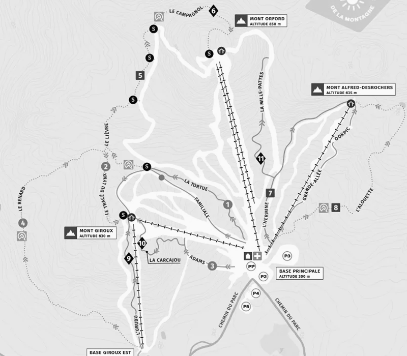

Tableau de bord des inspections

État des pistes
Bon état
Attention
Critique
Non inspecté
Types
Sentiers
Abris
Difficulté des sentiers
Facile
Intermédiaire
Difficile
Informations détaillées
Cliquez sur une piste ou un abri pour voir les détails
Sélectionnez une piste ou un abri sur la carte pour afficher ses informations.
Nom du sentier
BonDernière inspection
Date et inspecteur
Problèmes signalés
détails
Détails sur l'inspection
Caractéristiques
Détails sur le sentier/abri
Inspections récentes de sentier (moins de 7 jours)
Voir toutes les inspections (sentiers et abbris)| Date | Type | Sentier | Inspecteur | État | |
|---|---|---|---|---|---|
| Chargement des inspections récentes... | |||||